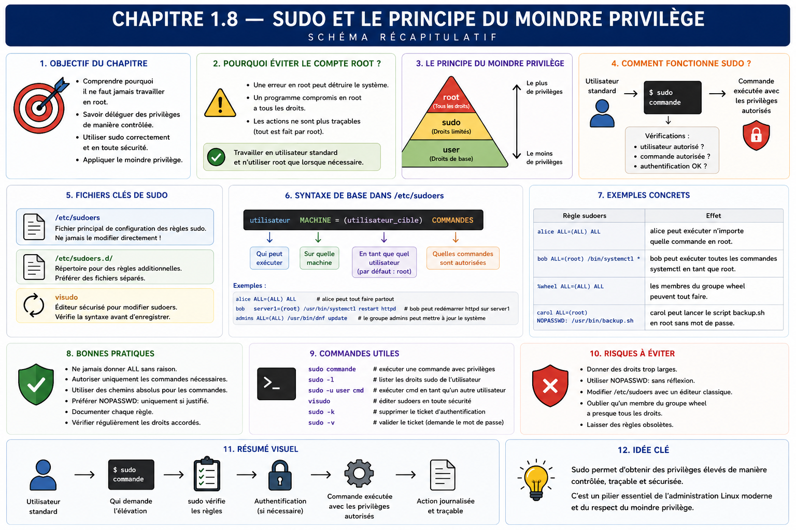

Chapitre 1.8 — Administrer avec sudo
Campagne 1 — Installation et fondations
« L'administration est une élévation contrôlée, pas une identité permanente. »
Vous êtes ici
PARTIE I — Construire un socle sécurisé
Campagne 1
1.1 Pourquoi sécuriser un socle Linux ? ✔
1.2 Installer AlmaLinux minimal ✔
1.3 Comprendre les composants du système ✔
1.4 Établir la baseline du serveur ✔
1.5 Mettre à jour et gérer les dépôts ✔
1.6 Organiser les systèmes de fichiers ✔
1.7 Comprendre identités et permissions ✔
► 1.8 Administrer avec sudo
1.9 Mission : mettre le serveur en sécurité
1.10 Créer le laboratoire Sentinel
Objectifs pédagogiques
À l'issue de ce chapitre, vous serez capable de :
- expliquer le rôle de
sudodans une administration nominative ; - distinguer utilisateur appelant, identité cible et commande autorisée ;
- vérifier ses droits, utiliser l'élévation pour une commande et fermer son cache ;
- retrouver la trace d'une élévation dans les journaux ;
- éviter les sessions
root, redirections trompeuses et délégations trop larges.
Pourquoi ce chapitre existe
Les tâches quotidiennes doivent être réalisées avec un compte nominatif non privilégié. Certaines opérations — installer un paquet, modifier une configuration système ou consulter un journal protégé — nécessitent pourtant une autorité supérieure. sudo fournit une transition explicite, soumise à une politique et journalisée.
Ce chapitre couvre l'usage sûr au quotidien. La campagne 2 traitera l'écriture avancée des règles sudoers, les alias, les fichiers sous /etc/sudoers.d, l'environnement et les délégations fines.
Trois identités à ne pas confondre
Une exécution sudo implique l'utilisateur qui demande, la politique qui décide et l'identité cible sous laquelle la commande s'exécute.
Par défaut, l'identité cible est souvent root, mais sudo peut viser un autre utilisateur. Dire « passer root » masque donc la décision importante : qui peut exécuter quelle commande, comme quelle identité et dans quel contexte ?
sudo, su et session root
su ouvre un shell ou lance une commande comme une autre identité, après authentification selon la politique PAM. Une connexion directe comme root ou un long shell privilégié concentre de nombreux gestes sous une identité générique.
sudo favorise au contraire des commandes ponctuelles reliées à l'appelant. Il ne rend pas une commande sûre et ne limite pas automatiquement un utilisateur membre d'un rôle très large ; il fournit le mécanisme sur lequel une politique de moindre privilège peut s'appuyer.
| Pratique | Identité visible | Portée | Traçabilité |
|---|---|---|---|
| commande ordinaire | utilisateur nominatif | droits usuels | journaux applicables |
sudo commande |
appelant + cible | une commande | décision et exécution tracées |
sudo -i |
appelant puis shell cible | session entière | début visible, gestes internes moins explicites |
connexion root |
identité partagée | session entière | attribution humaine difficile |
Préférez la commande ponctuelle. Un shell privilégié reste parfois nécessaire pour une procédure contrôlée, mais il doit être court, justifié et suivi d'une validation.
Vérifier avant d'utiliser
Commencez par votre identité et les autorisations que la politique vous présente :
id
sudo -l
sudo -V | sed -n '1,20p'
sudo -l ne doit pas être interprété trop vite. Une commande autorisée avec des arguments libres, un éditeur, un interpréteur ou un gestionnaire de paquets peut offrir des possibilités bien plus larges que son nom ne le suggère. L'analyse détaillée appartient à la campagne 2 ; dans ce chapitre, signalez toute règle que vous ne comprenez pas.
Le groupe wheel reçoit fréquemment une délégation d'administration générale sur AlmaLinux. L'appartenance à ce groupe équivaut donc à un privilège fort et doit être limitée aux administrateurs autorisés.
Élever une seule commande
Comparez l'identité ordinaire et la cible :
id
sudo id
sudo -u root id
Puis utilisez l'élévation uniquement sur la commande qui en a besoin :
sudo dnf repolist
sudo systemctl status chronyd --no-pager
N'ajoutez pas sudo à toutes les commandes d'un copier-coller. ip address, systemctl status et de nombreuses lectures fonctionnent déjà sans élévation. Exécuter en privilège supérieur augmente les conséquences d'une erreur de chemin, d'une variable vide ou d'un fichier malveillant.
Comprendre les redirections
Le shell traite > avant que sudo ne lance la commande. Cette construction échoue donc si votre utilisateur ne peut pas ouvrir le fichier cible :
sudo printf '%s\n' 'valeur' > /etc/exemple.conf
La solution n'est pas systématiquement sudo sh -c, qui donne à un shell entier l'autorité cible. Pour installer un fichier préparé et relu, préférez un outil explicite :
printf '%s\n' 'valeur' > ~/exemple.conf
sudo install -o root -g root -m 0644 ~/exemple.conf /etc/exemple.conf
Dans un laboratoire réel, utilisez un chemin prévu, validez la syntaxe avant remplacement et conservez une stratégie de retour arrière. Ne créez pas /etc/exemple.conf uniquement pour tester cette commande.
Arguments, environnement et programmes indirects
Une autorisation portant sur un exécutable n'implique pas que tous ses usages ont la même portée. Un éditeur peut ouvrir un shell, un interpréteur exécute du code arbitraire et un gestionnaire de paquets lance des scripts fournis par les paquets. Autoriser sudo python, sudo vi ou une commande avec un chemin de fichier contrôlé par l'appelant peut donc équivaloir à une délégation beaucoup plus large.
L'environnement constitue une autre entrée. sudo filtre ou reconstruit certaines variables selon sa politique, mais une commande peut encore lire des fichiers de configuration, chercher des greffons ou suivre des chemins fournis en argument. Utilisez des chemins absolus dans les procédures sensibles et ne supposez pas qu'un nom de commande suffit à définir sa sécurité.
Au quotidien, cette analyse conduit à préparer les entrées sans privilège, les relire, puis utiliser une commande d'installation ou de validation précise. Pour une configuration systemd, par exemple, l'administrateur peut travailler sur une copie dans son espace, exécuter un contrôle de syntaxe, comparer le diff, installer le fichier comme root, recharger systemd et tester l'unité.
La campagne 2 traduira ces principes en règles sudoers. Retenez dès maintenant qu'une règle apparemment étroite doit être testée comme le ferait un utilisateur curieux : peut-il choisir un autre fichier, altérer une variable, remplacer une dépendance ou obtenir un shell ? Le moindre privilège porte sur la capacité réelle, pas sur l'apparence de la ligne de commande.
Authentification et cache
Selon la politique, sudo demande généralement le secret de l'utilisateur appelant : il vérifie que la personne présente contrôle encore sa session. Une authentification réussie peut être mémorisée pendant une courte durée.
sudo -v
sudo -n true
sudo -k
sudo -v actualise la preuve d'authentification, -n refuse toute interaction et sudo -k invalide l'horodatage courant. Sur un poste partagé ou avant de vous éloigner, invalidez le cache et verrouillez la session.
Le cache améliore l'ergonomie mais crée une fenêtre pendant laquelle une personne ayant accès à la session peut lancer une commande autorisée sans nouvelle saisie. Sa durée et son périmètre relèvent de la politique de l'organisation.
Journaliser et interpréter
Sur un système utilisant journald, recherchez les événements de sudo :
sudo journalctl _COMM=sudo -b --no-pager
sudo journalctl _COMM=sudo -b -n 20 --no-pager
Selon la configuration et la version, les messages peuvent aussi être accessibles par l'unité ou les journaux d'authentification. Identifiez l'utilisateur appelant, le terminal, le répertoire courant, l'identité cible et la commande.
La présence d'un journal local n'empêche pas un administrateur puissant de l'altérer. Les campagnes d'audit et de centralisation renforceront la conservation et la corrélation.
sudo n'est pas destiné à Sentinel
Le processus Sentinel ne lancera pas sudo. Un service non interactif ne doit pas posséder un mot de passe ou une délégation générale pour contourner de mauvaises permissions.
Les tâches privilégiées seront réparties :
- le paquet installe le logiciel et prépare certains chemins ;
- systemd démarre le processus avec l'identité
sentinel; - l'administrateur modifie les configurations par un changement contrôlé ;
- le service lit et écrit uniquement les objets prévus ;
- les opérations spécialisées sont déléguées par des mécanismes explicites, pas par un shell
rootcaché.
Si Sentinel « a besoin de sudo », commencez par reformuler l'opération exacte. Il faut souvent corriger un propriétaire, créer un répertoire au démarrage ou séparer un composant privilégié très limité.
TP 1 — Exercer une élévation ponctuelle
- relevez
idetsudo -l; - invalidez le cache avec
sudo -k; - exécutez
sudo idet observez la cible ; - exécutez une lecture autorisée comme
sudo dnf repolist; - invalidez de nouveau le cache ;
- vérifiez avec
sudo -n truequ'une interaction serait nécessaire.
Notez pour chaque étape l'identité appelante, l'identité cible et le résultat. N'utilisez pas une commande de modification uniquement pour démontrer sudo.
TP 2 — Relire la trace
Collectez les événements correspondant au TP 1 et construisez une chronologie : demande, authentification réussie ou refusée, commande, cible et code de retour si disponible.
Comparez l'heure avec timedatectl et vérifiez que le nom d'hôte et l'utilisateur sont identifiables. Expliquez ce que le journal prouve et ce qu'il ne prouve pas, notamment le contenu des actions réalisées dans un éventuel shell interactif.
Mission d'ingénieur — Administrer sans session permanente
Préparez une procédure pour trois opérations Sentinel futures : installer le paquet, déployer une configuration validée et redémarrer le service. Pour chaque opération, précisez :
- étapes ordinaires sans privilège ;
- commande exacte nécessitant une élévation ;
- identité cible ;
- validation avant exécution ;
- preuve dans le journal ;
- test après changement ;
- retour arrière ;
- raison pour laquelle le processus
sentinelne reçoit pas ce droit.
La procédure doit éviter sudo -i, sudo su et les permissions NOPASSWD non justifiées. La politique fine sera conçue en 2.8.
Impact sur Sentinel
Sentinel sera exploité par des administrateurs nominatifs qui élèvent seulement les commandes de changement. Le service lui-même restera non privilégié. Cette séparation améliore le confinement, la relecture des opérations et la possibilité d'automatiser des actions précises.
Synthèse
sudoapplique une politique entre un appelant, une commande et une identité cible.- Une commande ponctuelle est plus lisible et moins risquée qu'une longue session
root. sudo -lexpose les droits ; leur portée réelle doit être analysée.- Le shell traite les redirections, ce qui explique plusieurs erreurs d'élévation.
- Le cache d'authentification doit être compris et invalidé sur une session exposée.
- Les événements
sudoapportent une trace, renforcée plus tard par l'audit centralisé. - Sentinel ne doit jamais lancer
sudopour compenser une conception de permissions défaillante.
Schéma récapitulatif

Pour aller plus loin
Consultez man sudo, man sudoers et man journalctl. Ne modifiez jamais /etc/sudoers avec un éditeur ordinaire ; la campagne 2 utilisera visudo et des fichiers dédiés pour valider la syntaxe.
Chapitre suivant : appliquer ensemble baseline, mises à jour, services, accès et preuves dans une mission de première mise en sécurité.
← 1.7 — Comprendre identités et permissions · 1.9 — Mission : mettre le serveur en sécurité →